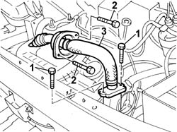

1080C54 pipe carrying exhaust gas from e.g.r. valve to inlet manifold - r + r
- Path
- Procedures > 10 ENGINE > 1080 EMISSION CONTROL SYSTEM > 1080C exhaust gas recirculation system (e.g.r.) > 1080C54 pipe carrying exhaust gas from e.g.r. valve to inlet manifold - r + r
- Kind
- repair procedure (removal / refitting; the operation number is the code)
- Applies to
- all engines; all production periods
- Interactive page
- https://sloeber94.github.io/elrnDB-fDbl/en/#/2584476
Applies to: all engines; all production periods
 Removing
Removing
 Refitting
Refitting1048A32 sleeve from air cleaner to intake manifold - r + r
1. Undo the bolts securing the pipe to the cam cover.
2. Undo the bolts securing the pipe to the EGR valve.
3. Remove the exhaust gas supply pipe.

Applies to: all engines; all production periods
Refitting
RemovingFit the pipe and tighten the retaining bolts to the cam cover and EGR valve.
Tighten the bolts on the EGR valve to torque.
 | Fastening | Component | Ø | Value (daNm) |
|---|---|---|---|---|
- | Bolt | EGR VALVE PIPE | M8 | (EGR valve) 2.5 |